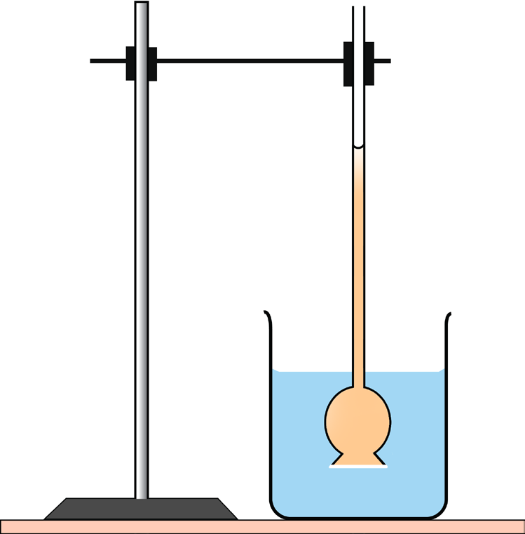
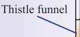

67
Student’s Book - Form Two

Biology for Secondary Schools
2.
Invert the thistle funnel and fill it with sugar solution.
3.
Mark the level of sugar solution in
the thistle funnel using a marker pen.
4.
Slowly immerse the thistle funnel
into the beaker containing water as shown in Figure 3.3.

Stand
Thistle funnel
Beaker
Cellophane membrane
Sugar solution
Water

Figure 3.3: Experimental set-up to demonstrate osmosis across non living membrane
5.
Leave the set-up undisturbed for about 3 hours.
6.
Mark the levels of the sugar
solution in the thistle funnel and the level of water in the beaker.
Questions
1.
What did you observe on the
levels of water and the sugar
solution?
2.
What are the reasons for your
observation?
Activity 3.3: Demonstrate osmosis using potato cubes
Materials
Three raw potatoes, sugar solution, water, source of heat, and beakers or dishes, scalpel or knife
Procedure
1.
Peel three potatoes.
2.
Cut each potato into half and make
a shallow hole on each half.
3.
Boil one of the potatoes to kill the
cells
4.
Place each half of the potato in a
beaker or dish that contains water.
The water should not cover the
potato.
Safety precautions
Observe safety precautions when
working with sharp, glass objects
and heat.
5.
Put some sugar solution in the
shallow hole in one raw potato
and the boiled potato. Leave the
other raw potato empty. Label
these set-ups as (a), (b), and (c), respectively.
6.
Mark the level of water in each
beaker or dish.
08/04/2026 10:18:16